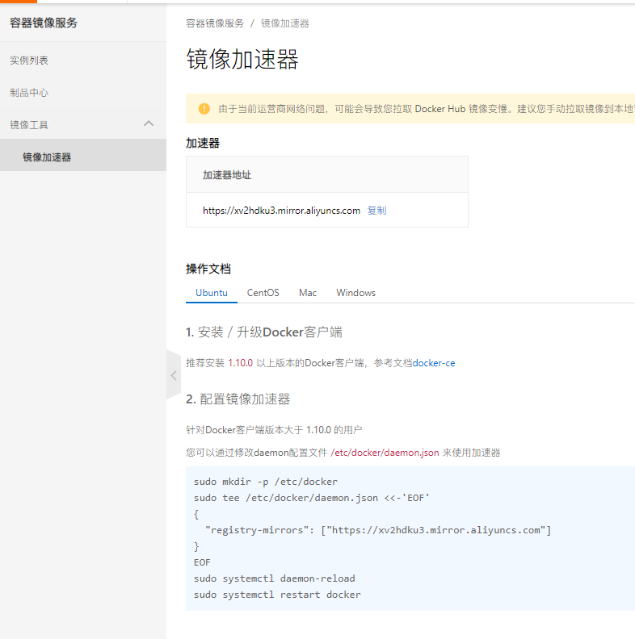
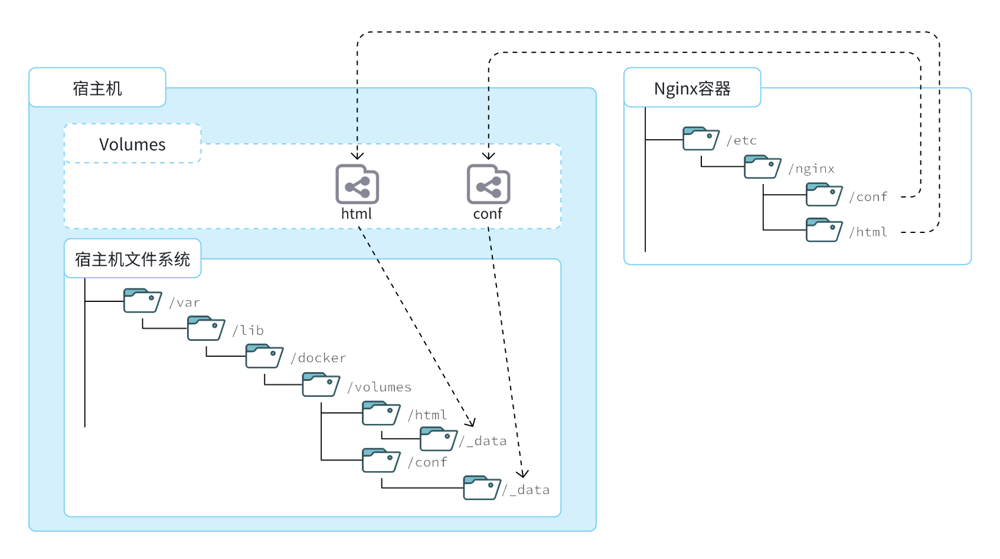

安装docker
1、配置Docker的yum库
1.1 安装yum工具
xxxxxxxxxxyum install -y yum-utils1.2 安装成功后，执行命令，配置Docker的yum源
xxxxxxxxxxyum-config-manager --add-repo https://download.docker.com/linux/centos/docker-ce.repo1.3 安装 Docker
xxxxxxxxxxyum install -y docker-ce docker-ce-cli containerd.io docker-buildx-plugin docker-compose-plugin --allowerasing1.4 启动和校验
xxxxxxxxxx# 启动Dockersystemctl start docker# 停止Dockersystemctl stop docker# 重启systemctl restart docker# 设置开机自启systemctl enable docker# 执行docker ps命令，如果不报错，说明安装启动成功docker ps1.5 配置阿里云加速


xxxxxxxxxxsudo mkdir -p /etc/dockersudo tee /etc/docker/daemon.json <<-'EOF'{ "registry-mirrors": [ "https://docker.mirrors.ustc.edu.cn" ]}EOFsudo systemctl daemon-reloadsudo systemctl restart docker部署MySQL
当利用Docker安装应用时Docker:会自动搜索并下载应用镜像(image)。镜像不仅包含应用本身，还包含应用运行所需要的环境、配置、系统函数库。Docker会在运行镜像时创建一个隔离环境，称为容器（container)。
Docker 官网维护了一个公共仓库：Docker
xxxxxxxxxxdocker run -d \ --name mysql \ -p 3306:3306 \ -e TZ=Asia/Shanghai \ -e MYSQL_ROOT_PASSWORD=123 \ -v /root/mysql/data:/var/lib/mysql \ -v /root/mysql/conf:/etc/mysql/conf.d \ -v /root/mysql/init:/docker-entrypoint-initdb.d \ --network hm-net\ mysql1、命令解读
docker run -d：创建并运行一个容器，-d 是让容器在后台运行--name：给容器一个名字，必须唯一-p 3306:3306：设置端口映射，宿主机端口:容器端口-e KEY:VALUE：设置环境变量，可以通过镜像文档进行查看，Environment Variables-v 数据卷:容器内目录：数据卷挂在mysql：指定运行镜像名字，完整写法repository:tagrepository：镜像名 tag：镜像版本，没有指定tag市，默认是latest，代表最新版本的镜像
docker 基础
1、常见命令
1.1 本地镜像管理
docker pull：下载镜像docker push：推送本地镜像到云仓库docker images：查看本地镜像docker rmi：删除本地镜像docker build：通过 dockerfile 构建自定义进项docker save：保存镜像到本地xxxxxxxxxxdocker save -o nginx.tar nginx:latest #将nginx:latest镜像打包成nginx.tar保存到本地
docker load：加载本地镜像
1.2 容器管理
docker run：创建容器xxxxxxxxxxdocker run -d --name nginx -p 80:80 nginx
docker stop：停止容器内部进程docker start：运行停止的容器进程docker ps：默认查看运行中的容器xxxxxxxxxx# 对输出的内容格式化docker ps --format "table {{.ID}}\t{{.Image}}\t{{.Ports}}\t{{.Status}}\t{{.Names}}"-a：查看所有容器
docker rm：删除容器-f：强制删除
docker logs：查看容器运行日志-f：持续查看日志
docker exec：进入容器-it：添加一个可输入的终端bash：通过bash进行交互
docker inspect：查看容器详情
1.3 命令别名
# 修改/root/.bashrc文件，给docker 命令设置一个别名
xxxxxxxxxx[root@localhost ~]# vi /root/.bashrc内容如下：# .bashrc
# User specific aliases and functions
alias rm='rm -i'alias cp='cp -i'alias mv='mv -i'alias dps='docker ps --format "table {{.ID}}\t{{.Image}}\t{{.Ports}}\t{{.Status}}\t{{.Names}}"'alias dis='docker images'
# Source global definitionsif [ -f /etc/bashrc ]; then . /etc/bashrcfi
[root@localhost ~]# source ~/.bashrc # 使更改生效2、docker 数据卷
数据卷（volume）是一个虚拟目录，是容器内目录与宿主机目录之间映射的桥梁
宿主机数据卷目录：/var/lib/docker/volumes，其下再根据数据卷名称创建新目录，格式为/数据卷名/_data

2.1 数据卷命令
docker volume create：创建数据卷docker volume ls：查看所有数据卷docker volume rm：删除指定数据卷docker volume inspect 数据卷：查看某个数据卷的详情docker volume prune：清除数据卷
2.2 数据卷挂载
- 在执行
docker run创建容器时，使用-v 数据卷:容器内目录完成数据卷挂载 - 当创建容器时，如果要挂载的数据卷不存在，会自动创建数据卷
3、docker 本地目录挂载
数据卷的目录结构较深，如果我们去操作数据卷目录会不太方便。在很多情况下，我们会直接将容器目录与宿主机指定目录挂载。挂载语法与数据卷类似：
xxxxxxxxxx# 挂载本地目录-v 本地目录:容器内目录# 挂载本地文件-v 本地文件:容器内文件# 本地目录或文件必须以 / 或 ./开头，如果直接以名字开头，会被识别为数据卷名而非本地目录名。-v mysql:/var/lib/mysql # 会被识别为一个数据卷叫mysql，运行时会自动创建这个数据卷-v ./mysql:/var/lib/mysql # 会被识别为当前目录下的mysql目录，运行时如果不存在会创建目录
4、自定义镜像
自定义镜像本质就是依次准备好程序运行的基础环境、依赖、应用本身、运行配置等文件，并且打包而成。 每一次操作其实都是在生产一些文件（系统运行环境、函数库、配置最终都是磁盘文件），所以镜像就是一堆文件的集合。 镜像文件不是随意堆放的，而是按照操作的步骤分层叠加而成，每一层形成的文件都会单独打包并标记一个唯一id，称为Layer（层）。这样，如果我们构建时用到的某些层其他人已经制作过，就可以直接拷贝使用这些层，而不用重复制作。
4.1 Dockerfile 语法
由于制作镜像的过程中，需要逐层处理和打包，比较复杂，所以Docker就提供了自动打包镜像的功能。我们只需要将打包的过程，每一层要做的事情用固定的语法写下来，交给Docker去执行即可。 而这种记录镜像结构的文件就称为Dockerfile，其对应的语法可以参考官方文档：
| 指令 | 说明 | 示例 |
|---|---|---|
| FROM | 指定基础镜像 | FROM centos:6 |
| ENV | 设置环境变量，可在后面指令使用 | ENV key value |
| COPY | 拷贝本地文件到镜像的指定目录 | COPY ./xx.jar /tmp/app.jar |
| RUN | 执行Linux的shell命令，一般是安装过程的命令 | RUN yum install gcc |
| EXPOSE | 指定容器运行时监听的端口，是给镜像使用者看的 | EXPOSE 8080 |
| ENTRYPOINT | 镜像中应用的启动命令，容器运行时调用 | ENTRYPOINT java -jar xx.jar |
例如，要基于Ubuntu镜像来构建一个Java应用，其Dockerfile内容如下：
xxxxxxxxxx# Dockerfile文件# 指定基础镜像FROM ubuntu:16.04# 配置环境变量，JDK的安装目录、容器内时区ENV JAVA_DIR=/usr/localENV TZ=Asia/Shanghai# 拷贝jdk和java项目的包COPY ./jdk8.tar.gz $JAVA_DIR/COPY ./docker-demo.jar /tmp/app.jar# 设定时区RUN ln -snf /usr/share/zoneinfo/$TZ /etc/localtime && echo $TZ > /etc/timezone# 安装JDKRUN cd $JAVA_DIR \ && tar -xf ./jdk8.tar.gz \ && mv ./jdk1.8.0_144 ./java8 # 配置环境变量ENV JAVA_HOME=$JAVA_DIR/java8ENV PATH=$PATH:$JAVA_HOME/bin# 指定项目监听的端口EXPOSE 8080# 入口，java项目的启动命令ENTRYPOINT ["java", "-jar", "/app.jar"]4.2 构建镜像
当Dockerfile文件写好以后，就可以利用命令来构建镜像了。
首先，我们将课前资料提供的docker-demo.jar包以及Dockerfile拷贝到虚拟机的/root/demo目录：

xxxxxxxxxx# 进入镜像目录cd /root/demo# 开始构建docker build -t docker-demo:1.0 .命令说明：
docker build: 就是构建一个docker镜像-t docker-demo:1.0：-t参数是指定镜像的名称（repository和tag）.: 最后的点是指构建时Dockerfile所在路径，由于我们进入了demo目录，所以指定的是.代表当前目录，也可以直接指定Dockerfile目录：
5、Docker 网络
在默认情况下，所有容器都是以bridge方式连接到Docker的一个虚拟网桥上 但是，容器的网络IP其实是一个虚拟的IP，其值并不固定与某一个容器绑定，如果我们在开发时写死某个IP，而在部署时很可能MySQL容器的IP会发生变化，连接会失败。
所以，我们必须借助于docker的网络功能来解决这个问题，官方文档：
| 命令 | 说明 | 文档地址 |
|---|---|---|
| docker network create | 创建一个网络 | docker network create |
| docker network ls | 查看所有网络 | docs.docker.com |
| docker network rm | 删除指定网络 | docs.docker.com |
| docker network prune | 清除未使用的网络 | docs.docker.com |
| docker network connect | 使指定容器连接加入某网络 | docs.docker.com |
| docker network disconnect | 使指定容器连接离开某网络 | docker network disconnect |
| docker network inspect | 查看网络详细信息 | docker network inspect |
举例：
xxxxxxxxxx# 1.首先通过命令创建一个网络docker network create hmall
# 2.然后查看网络docker network ls# 结果：NETWORK ID NAME DRIVER SCOPE639bc44d0a87 bridge bridge local403f16ec62a2 hmall bridge local0dc0f72a0fbb host host localcd8d3e8df47b none null local# 其中，除了hmall以外，其它都是默认的网络
# 3.让dd和mysql都加入该网络，注意，在加入网络时可以通过--alias给容器起别名# 这样该网络内的其它容器可以用别名互相访问！# 3.1.mysql容器，指定别名为db，另外每一个容器都有一个别名是容器名docker network connect hmall mysql --alias db# 3.2.db容器，也就是我们的java项目docker network connect hmall dd
# 4.进入dd容器，尝试利用别名访问db# 4.1.进入容器docker exec -it dd bash# 4.2.用db别名访问ping db# 结果PING db (172.18.0.2) 56(84) bytes of data.64 bytes from mysql.hmall (172.18.0.2): icmp_seq=1 ttl=64 time=0.070 ms64 bytes from mysql.hmall (172.18.0.2): icmp_seq=2 ttl=64 time=0.056 ms# 4.3.用容器名访问ping mysql# 结果：PING mysql (172.18.0.2) 56(84) bytes of data.64 bytes from mysql.hmall (172.18.0.2): icmp_seq=1 ttl=64 time=0.044 ms64 bytes from mysql.hmall (172.18.0.2): icmp_seq=2 ttl=64 time=0.054 ms6、docker-compose
其中，OPTIONS和COMMAND都是可选参数，比较常见的有：
| 类型 | 参数或指令 | 说明 |
|---|---|---|
| Options | -f | 指定compose文件的路径和名称 |
| -p | 指定project名称。project就是当前compose文件中设置的多个service的集合，是逻辑概念 | 指定project名称。project就是当前compose文件中设置的多个service的集合，是逻辑概念 |
| Commands | up | 创建并启动所有service容器 |
| down | 停止并移除所有容器、网络 | 停止并移除所有容器、网络 |
| ps | 列出所有启动的容器 | 列出所有启动的容器 |
| logs | 查看指定容器的日志 | 查看指定容器的日志 |
| stop | 停止容器 | 停止容器 |
| start | 启动容器 | 启动容器 |
| restart | 重启容器 | 重启容器 |
| top | 查看运行的进程 | 查看运行的进程 |
| exec | 在指定的运行中容器中执行命令 | 在指定的运行中容器中执行命令 |
# 1.进入root目录cd /root
# 2.删除旧容器docker rm -f $(docker ps -qa)
# 3.删除hmall镜像docker rmi hmall
# 4.清空MySQL数据rm -rf mysql/data
# 5.启动所有, -d 参数是后台启动docker-compose up -d# 结果：[+] Building 15.5s (8/8) FINISHED => [internal] load build definition from Dockerfile 0.0s => => transferring dockerfile: 358B 0.0s => [internal] load .dockerignore 0.0s => => transferring context: 2B 0.0s => [internal] load metadata for docker.io/library/openjdk:11.0-jre-buster 15.4s => [1/3] FROM docker.io/library/openjdk:11.0-jre-buster@sha256:3546a17e6fb4ff4fa681c3 0.0s => [internal] load build context 0.0s => => transferring context: 98B 0.0s => CACHED [2/3] RUN ln -snf /usr/share/zoneinfo/Asia/Shanghai /etc/localtime && echo 0.0s => CACHED [3/3] COPY hm-service.jar /app.jar 0.0s => exporting to image 0.0s => => exporting layers 0.0s => => writing image sha256:32eebee16acde22550232f2eb80c69d2ce813ed099640e4cfed2193f71 0.0s => => naming to docker.io/library/root-hmall 0.0s[+] Running 4/4 ✔ Network hmall Created 0.2s ✔ Container mysql Started 0.5s ✔ Container hmall Started 0.9s ✔ Container nginx Started 1.5s
# 6.查看镜像docker-compose images# 结果CONTAINER REPOSITORY TAG IMAGE ID SIZEhmall root-hmall latest 32eebee16acd 362MBmysql mysql latest 3218b38490ce 516MBnginx nginx latest 605c77e624dd 141MB
# 7.查看容器docker-compose ps# 结果NAME IMAGE COMMAND SERVICE CREATED STATUS PORTShmall root-hmall "java -jar /app.jar" hmall 54 seconds ago Up 52 seconds 0.0.0.0:8080->8080/tcp, :::8080->8080/tcpmysql mysql "docker-entrypoint.s…" mysql 54 seconds ago Up 53 seconds 0.0.0.0:3306->3306/tcp, :::3306->3306/tcp, 33060/tcpnginx nginx "/docker-entrypoint.…" nginx 54 seconds ago Up 52 seconds 80/tcp, 0.0.0.0:18080-18081->18080-18081/tcp, :::18080-18081->18080-18081/tcp